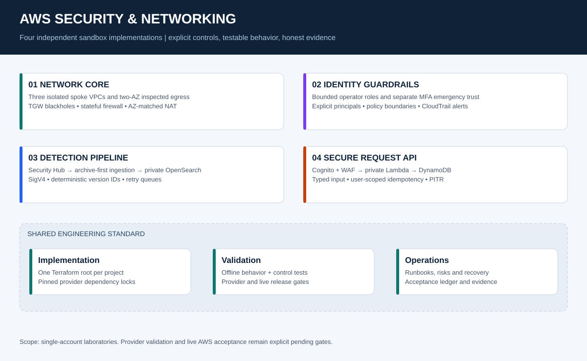

0Total recorded acceptance scenarios
0Live scenarios pending / not run
4Independent Terraform roots
Portfolio architecture

Select a project to inspect its project-specific committed architecture drawing.

Architecture drawings illustrate intended configuration, not packet-level live behavior.
Evidence & acceptance ledger
Source: control register, offline-to-live traceability, and evidence standard. The related controls and status remain synthetic project evidence until separately authorized live tests are recorded. The embedded register is checked for exact source parity by Python tests.